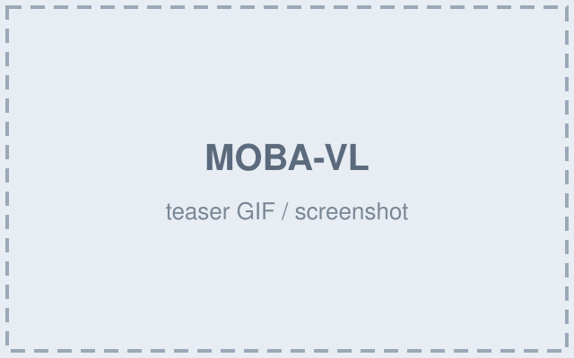
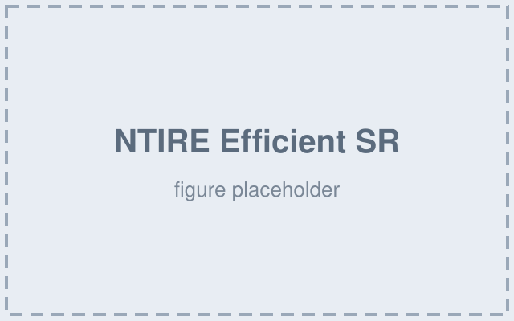

Shengyun Zhong
About Me
I am a master's student in Electrical and Computer Engineering at Northeastern University (Seattle), expected to graduate in December 2026. I received my B.S. in Computer Science from Zhejiang University of Science and Technology.
My research focuses on multimodal large language models for real-time video understanding. I co-led MOBA-VL, a 9B vision-language model that watches esports matches and commentates second by second. It is trained with supervised fine-tuning followed by GRPO with event-localized credit assignment, and runs streaming inference that reuses and periodically resets the KV cache. Going forward, I am excited about extending streaming perception toward world models and vision-language-action models.
I am looking for Ph.D. positions starting Spring / Fall 2027.
Research Interests
- Multimodal LLMs & Video Understanding: streaming video LLMs, real-time video commentary, RL post-training
- World Models & Video Generation: autoregressive video models, unified understanding and generation
- Embodied AI: vision-language-action (VLA) models
News
- [Nov. 2026] I am applying for Ph.D. programs for Spring / Fall 2027.
- [Month 2026] Our preprint MOBA-VL on real-time esports commentary is released. TODO
- [2025] Our team TenInOneSR's solution is included in the NTIRE 2025 Efficient Super-Resolution Challenge report (CVPR 2025 Workshop).
Publications
-

Preprint
Challenge Reports
-

CVPRWIEEE/CVF Conference on Computer Vision and Pattern Recognition Workshops (CVPRW), 2025.PDF Team TenInOneSR
Powered by Minimal Light theme.